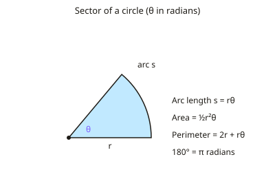

A-level Maths Year 13 · Topic 3
Pure: trigonometry
Trigonometry at A2 level adds new functions, identities and techniques for solving equations.
We will use radians, small angle approximations, and the reciprocal and inverse trigonometric functions.
Then we use the addition and double angle formulae, write expressions in the R sine form, and convert parametric equations.
- 5 subtopics
- 201 questions
- Free: 3.1 notes and 10 questions
In this topic
- 3.1Radians, trigonometry and parametric equationsFree below · 52 questions
- 3.2Small-angle approximations for sin, cos and tanOpen in Full Marks · 35 questions
- 3.3Reciprocal trigonometric functions (sec, cosec, cot) and inverse trigonometric functionsOpen in Full Marks · 57 questions
- 3.4Addition and double-angle formulae, and the R sin(x+α) formOpen in Full Marks · 31 questions
- 3.5Parametric equations: converting to Cartesian form and sketching curvesOpen in Full Marks · 26 questions
3.1 · Free notes
Radians, trigonometry and parametric equations

Key points
- Radians: 180° = π radians. Arc length s = rθ; area of a sector = ½r²θ, with θ in radians.
- Identities: sin²θ + cos²θ = 1; 1 + tan²θ = sec²θ; 1 + cot²θ = cosec²θ.
- Double angle formulae: sin2θ = 2sinθcosθ; cos2θ = cos²θ − sin²θ; and the compound angle formulae for sin(A ± B) and cos(A ± B).
- The form R sin(θ ± α) or R cos(θ ± α) is used to solve equations like a sinθ + b cosθ = c and to find maxima and minima.
- Parametric equations define x and y in terms of a parameter t; converting to Cartesian form means eliminating t.
In more detail
- Worked identity equation: sec²θ = 3 tan θ − 1 → tan²θ − 3 tan θ + 2 = 0 → tan θ = 1 or 2 → θ = 45°, 63.4°, 225°, 243.4°.
- Worked double angle: sin 2θ = sin θ → sin θ(2 cos θ − 1) = 0 → θ = 0°, 60°, 180°, 300°.
- Worked R form: 3 sin x + 4 cos x = 5 sin(x + 53.1°), so its maximum is 5, when x = 36.9°.
- Worked parametric: x = 2t, y = t² → y = x²/4; x = 3 cos t, y = 3 sin t → x² + y² = 9.
- Worked sector: an arc of 5 cm with r = 4 cm → θ = 1.25 rad and area = ½ × 16 × 1.25 = 10 cm².
Practice
Radians, trigonometry and parametric equations: 10 questions
Pick an answer to check it, or open the answer for the explanation.
1. How many radians are in 180°?
- π/2
- π
- 2π
- 360
Show answer
B: π. π radians equals 180°.
2. What is the arc length of a sector with radius 6 cm and angle 0.5 radians?
- 3 cm
- 6 cm
- 12 cm
- 9 cm
Show answer
A: 3 cm. s = rθ = 6 × 0.5 = 3 cm.
3. Which identity is correct?
- 1 + tan²θ = sec²θ
- 1 + sin²θ = cos²θ
- tan²θ = 1 − sec²θ
- sec²θ = 1 − tan²θ
Show answer
A: 1 + tan²θ = sec²θ. This follows from dividing sin²θ + cos²θ = 1 by cos²θ.
4. What is sin 2θ equal to?
- 2 sinθ
- sinθ cosθ
- 2 sinθ cosθ
- sin²θ − cos²θ
Show answer
C: 2 sinθ cosθ. This is the double angle formula for sine.
5. What are parametric equations?
- Equations relating x and y directly
- Equations giving x and y each in terms of a parameter
- Equations with no variables
- Only used for circles
Show answer
B: Equations giving x and y each in terms of a parameter. Eliminating the parameter gives the Cartesian equation.
6. Convert 90° to radians
- π/4
- π/3
- π/2
- π
Show answer
C: π/2. 180° = π radians, so 90° = π/2.
7. What is the area of a sector with radius 4 cm and angle 1.5 radians?
- 6 cm²
- 12 cm²
- 24 cm²
- 3 cm²
Show answer
B: 12 cm². ½r²θ = ½ × 16 × 1.5 = 12 cm².
8. What is cos 2θ in terms of sin θ?
- 1 − 2sin²θ
- 2sin²θ − 1
- 2sinθcosθ
- 1 + 2sin²θ
Show answer
A: 1 − 2sin²θ. cos2θ = 1 − 2sin²θ is one standard form.
9. Convert 225° to radians.
- 3π/4
- 5π/4
- 7π/4
- 5π/6
Show answer
B: 5π/4. 225 × π/180 = 5π/4. The value 3π/4 is 135°, and 7π/4 is 315°.
10. Convert 2π/3 radians to degrees.
- 240°
- 150°
- 60°
- 120°
Show answer
D: 120°. 2π/3 × 180/π = 120°. Multiply radians by 180/π to get degrees. The value 60° would be π/3.
Keep going in Full Marks
Full Marks has 52 questions on Radians, trigonometry and parametric equations (42 more than here), set out in practice levels. You also get notes and 3D models for all 5 subtopics of Pure: trigonometry, plus games, timed exams and past papers.
On your exam board
- AQATopic 3: Parametric equations, Topic 5: Radians and further trigonometry
- OCR ATopic 3: Parametric equations, Topic 5: Radians and further trigonometry
- OCR BTopic 3: Parametric equations, Topic 5: Radians and further trigonometry
- EdexcelTopic 3: Parametric equations, Topic 5: Radians and further trigonometry
- CambridgeTopic 3.3: Trigonometry, Topic 3.4: Differentiation